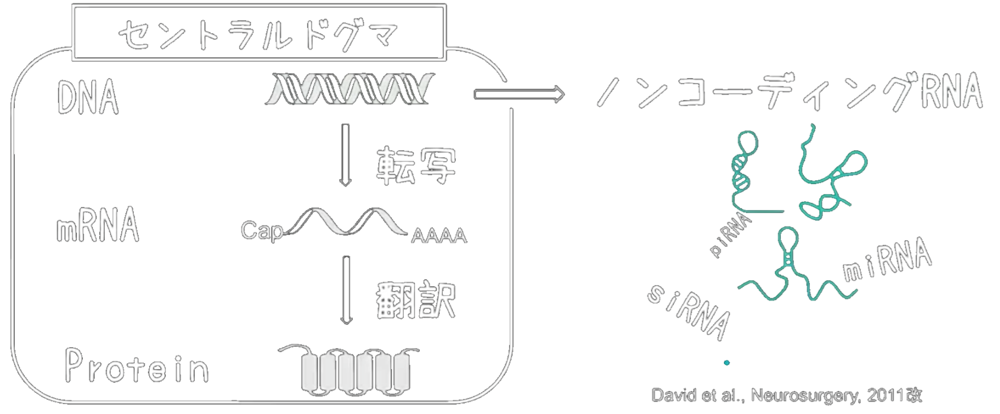

<pre style="display:none"><code></code></pre> <header class="menu-title">はじめに</header> このスライドは、 [東京大学 程研究室](http://ui-tei.rnai.jp/) が、同大学 理学部 [生物情報科学科](http://www.bs.s.u-tokyo.ac.jp/bioinfo/)・[生物化学科](http://www.bs.s.u-tokyo.ac.jp/biochem/) の３年生を対象に行う講義（学生実習）「生命科学基礎実験」で用いるスライドです。 この講義は、 - 培養細胞から抽出したRNAを **Cy3で蛍光ラベル化** し、マイクロアレイ上のプローブと結合（ **ハイブリダイゼーション** ）させる <b>「ウェットパート」</b> - 取得したマイクロアレイの蛍光データを解析する<b>「ドライパート」</b> に分かれていますが、このスライドで全体の概観を掴み、<b>「ドライパート」</b>の解析は、[Google Colaboratory]() を用いて実際に手を動かしながら解説します。（そこでは、[このPythonライブラリ](https://iwasakishuto.github.io/TeiLab-BasicLaboratoryWork-in-LifeScienceExperiments/index.html)を使用します。） -- <header class="menu-title" style="display:none">フォント設定</header> <div class="max-w-sx mx-auto"> <a style="color:white; cursor:pointer;" onclick="removeHachiMaruPop()">フォントを直す</a> </div> --- <header class="menu-title">程研究室</header> RNAには、DNAの情報をタンパク質へと変換するmRNAだけでなく、**タンパク質をコードしないnon-coding RNA(ncRNA)** も存在します。 近年、「ジャンク」と呼ばれていた ncRNAが、様々な生理機能を制御することが分かってきました。当研究室では、その中でも特に <b>miRNA</b> と <b>siRNA</b> に焦点を当てた研究をおこなっています。 <div class="max-w-5xl">  </div> -- <!-- .slide: data-background-iframe="https://www.youtube.com/embed/VJFBAYeypQg" is="x-frame-bypass" --> <header class="menu-title" style="display:none">研究室紹介動画</header> --- <header class="menu-title">miRNA & siRNA</header> <div class="max-w-5xl"> <img width="60%" class="mx-auto block" src="https://media.springernature.com/lw685/springer-static/image/art%3A10.1038%2Fsrep00996/MediaObjects/41598_2012_Article_BFsrep00996_Fig7_HTML.jpg?as=webp" alt="Figure.7 Possible thermodynamic control of miRNA/siRNA-mediated gene-silencing activity." /> <small style="margin-top:10px">Figure is from <a href="https://doi.org/10.1038/srep00996">Hibio, N. et al. Sci Rep 2, 996 (2012)</a></small> </div> より詳細が知りたい方は。。。 - [(2013) Molecular mechanisms of RNA interference](https://www.ncbi.nlm.nih.gov/pmc/articles/PMC5895182/) - [(2015) siRNA Versus miRNA as Therapeutics for Gene Silencing](https://doi.org/10.1038/mtna.2015.23) - [(2003) MicroRNAs and small interfering RNAs can inhibit mRNA expression by similar mechanisms](https://doi.org/10.1073/pnas.1630797100) -- <!-- .slide: data-background-image="https://github.com/iwasakishuto/Translation-Gummy/raw/master/image/header.png?raw=true" data-background-opacity=".1" --> <header class="menu-title">Translation-Gummy</header> <p><b>Translation Gummy</b> is a magical gadget which enables user to be able to speak and understand other languages.</p> <div class="label-frame github-style-badges"> <span class="label">Translation-Gummy</span> <ul> <li>Open source on GitHub (<a href="https://github.com/iwasakishuto/Translation-Gummy" target="_blank"><img src="https://badge.fury.io/gh/iwasakishuto%2FTranslation-Gummy.svg" alt="GitHub version"></a>) under MIT lisence (<a href="https://github.com/iwasakishuto/Translation-Gummy/blob/master/LICENSE" target="_blank"><img src="https://img.shields.io/github/license/mashape/apistatus.svg?maxAge=2592000" alt="license"></a>) and tested with Github Actions (<a href="https://github.com/iwasakishuto/Translation-Gummy/blob/master/.github/workflows/execute_python_package.yml" target="_blank"><img src="https://github.com/iwasakishuto/Translation-Gummy/workflows/Execute%20Translation-Gummy/badge.svg" alt="Execute Translation-Gummy"></a><a href="https://github.com/iwasakishuto/Translation-Gummy/blob/master/.github/workflows/upload_python_package.yml" target="_blank"><img src="https://github.com/iwasakishuto/Translation-Gummy/workflows/Upload%20to%20PyPI/badge.svg" alt="Upload to PyPI"></a>)</li> <li>You can install from PyPI <a href="https://pypi.org/project/Translation-Gummy/" target="_blank"><img src="https://badge.fury.io/py/Translation-Gummy.svg" alt="PyPI version"></a></li> <li>Commentary articles wrote in Japanese: <a href="https://qiita.com/cabernet_rock/items/670d5cd597bcd9f2ff3f" target="_blank"><img src="https://img.shields.io/badge/%E3%80%8C%E3%81%BB%E3%82%93%E8%A8%B3%E3%82%B3%E3%83%B3%E3%83%8B%E3%83%A3%E3%82%AF%E3%80%8D%E3%82%92%E9%A3%9F%E3%81%B9%E3%81%A6%E8%AB%96%E6%96%87%E3%82%92%E8%AA%AD%E3%82%82%E3%81%86-Qiita-64c914?style=flat-radius" alt="Qiita badge1"></a>, <a href="https://qiita.com/cabernet_rock/items/1f9bff5e0b9363da312d" target="_blank"><img src="https://img.shields.io/badge/%E3%80%8C%E3%81%BB%E3%82%93%E8%A8%B3%E3%82%B3%E3%83%B3%E3%83%8B%E3%83%A3%E3%82%AF%E3%80%8D%E3%82%92%E4%BD%BF%E3%81%A3%E3%81%A6%E3%81%BF%E3%82%88%E3%81%86%E3%80%82-Qiita-64c914?style=flat-radius" alt="Qiita badge2"></a></li> <li>Documentation: <a href="https://iwasakishuto.github.io/Translation-Gummy/index.html" target="_blank"><img src="https://img.shields.io/badge/Documentation-portfolio-001d34?style=flat-radius" alt="Documentation"></a></li> <li>Request for supporting new journals: <a href="https://www.twitter.com/messages/compose?recipient_id=1042783905697288193&text=Please%20support%20this%20journal%3A%20" target="_blank"><img src="https://img.shields.io/badge/twitter-Requests-1da1f2?style=flat-radius&logo=twitter" alt="twitter badge"></a> (Supported journals are listed on <a href="https://github.com/iwasakishuto/Translation-Gummy/wiki/Supported-journals">wiki</a>)</li> <li>Dockerfile: <a href="https://github.com/iwasakishuto/Translation-Gummy/blob/master/docker/Dockerfile" target="_blank"><img src="https://img.shields.io/badge/%F0%9F%90%B3-Dockerfile-0db7ed?style=flat-radius" alt="Docker file"></a></li> <li>Colaboratory notebook for Non-programmer: <a href="https://colab.research.google.com/github/iwasakishuto/Translation-Gummy/blob/master/examples/Colaboratory.ipynb" target="_blank"><img src="https://colab.research.google.com/assets/colab-badge.svg" alt="Open in Colab"></a></li> <li><b>You can see the demo below ↓</b></li> </ul> </div> -- <header class="menu-title">Demo (PyPI)</header> ```sh # Try it by yourself!! $ sudo pip install Translation-Gummy $ gummy-journal "https://www.nature.com/articles/ncb0800_500" ``` ```python >>> from gummy import TranslationGummy >>> model = TranslationGummy(gateway="utokyo", translator="deepl") >>> pdfpath = model.toPDF(url="https://www.nature.com/articles/ncb0800_500", delete_html=True) ``` <video width="80%" controls autoplay="true" loop="true" muted="true"> <source src="https://iwasakishuto.github.io/images/demo/Translation-Gummy/gummy-journal.mp4" type="video/mp4"> Your browser does not support the video tag. </video> -- <!-- .slide: data-background-iframe="https://iwasakishuto.github.io/Translation-Gummy/index.html" data-background-interactive --> <header class="menu-title">Documentation</header> --- <header class="menu-title">RNAiと核酸医薬</header> 核酸医薬とは <b>「DNAやRNAの構成成分であるヌクレオチド（およびその誘導体）からなり、化学合成により製造される医薬品」</b> のことを指します。 2006年にノーベル生理学・医学賞を受賞したRNAiには以下の特徴があり、新薬開発において最も注目されている分野です。 - 生物に **元々備わっている** メカニズムを使用している。 - RISCを介した標的mRNAの分解は、**繰り返し作用** することができる。 - 理論上、**あらゆるタンパク質** の標的可が可能である。 - 疾患の原因となるタンパク質そのものに作用するのではなく、**より上流** のタンパク質の産生を抑制することができる。 - 情報科学の力で、最適な医薬品候補（siRNAの最適な配列）の **同定プロセスを効率化** することができる。 参考：[(2019) The current state and future directions of RNAi-based therapeutics](https://www.nature.com/articles/s41573-019-0017-4) -- <!-- .slide: data-background-iframe="https://player.vimeo.com/video/353805236?h=2ca194b02a" data-background-interactive --> <header class="menu-title" style="display: none;">細胞内でRNAi治療薬がどのように働くか（動画）</header> -- <!-- .slide: data-background-iframe="https://player.vimeo.com/video/389827562?h=593b8e33d5" data-background-interactive --> <header class="menu-title" style="display: none;">RNAiの働き（アニメーション）</header> --- <header class="menu-title">オフターゲット効果</header> <div class="max-w-5xl"> <img width="60%" class="mx-auto block" src="https://media.springernature.com/original/springer-static/image/chp%3A10.1007%2F978-1-0716-1298-9_2/MediaObjects/485053_1_En_2_Fig1_HTML.png" alt="Off-target effect." /> <small style="margin-top:10px">Figure is from <a href="https://doi.org/10.1007/978-1-0716-1298-9_2">Kobayashi, Y. et al. MIMB, vol 2282 (2021)</a></small> </div> --- <header class="menu-title">マイクロアレイ（実験系）</header> マイクロアレイはDNAチップとも呼ばれ、**予め塩基配列の分かっている** 1本鎖DNAを、基盤上に高密度に配置したものです。そこに、蛍光標識したRNAを結合（ハイブリダイゼーション）させることで、サンプルで発現している mRNA を網羅的に検出・定量することができます。 <div class="max-w-5xl"> <img width="60%" class="mx-auto block" src="https://bio.libretexts.org/@api/deki/files/50214/microarray-1024x591.png" alt="Figure.9.4.3 Diagram of typical dual-color microarray experiment" /> <small style="margin-top:10px">Figure is from <a href="https://bio.libretexts.org/Bookshelves/Biochemistry/Fundamentals_of_Biochemistry_%28LibreTexts%29/01%3A_Unit_I-_Structure_and_Catalysis/09%3A_Investigating_DNA/9.04%3A_DNA_Microarrays">Libre Texts</a> (dual-color microarray design)</small> </div> -- <!-- .slide: data-background-iframe="https://www.youtube.com/embed/VNsThMNjKhM" data-background-interactive --> <header class="menu-title" style="display:none">マイクロアレイ（動画）</header> --- <header class="menu-title">今回の実習</header> 今回の実習では、ビメンチンをターゲットとしたsiRNA（siVIM-270）に加え、siVIM-270のガイド鎖のシード領域に様々な化学修飾を導入したsiRNAをトランスフェクションしたHeLa細胞からRNAを抽出し、マイクロアレイによって網羅的な発現データを取得しました。 これらのデータから、**「各修飾が、ビメンチン（ターゲット）の発言量およびオフターゲット効果にどの程度影響を及ぼすか」** を調べることができそうです。 - [(2017) Chemical modification of the siRNA seed region suppresses off-target effects by steric hindrance to base-pairing with targets.](https://doi.org/10.1021/acsomega.7b00291) - [(2013) Designing functional siRNA with reduced off-target effects. "siRNA Design"](https://doi.org/10.1007/978-1-62703-119-6_3) - [(2012) siRNA design software for a target gene-specific RNA interference](https://doi.org/10.3389/fgene.2012.00102) -- <header class="menu-title">Python直書き</header> ```python [1-6|8-12|14-33|35-36|38-93] import os from typing import Dict, List, Optional import matplotlib.pyplot as plt import numpy as np import pandas as pd # 0. 変数定義 USE_COLS1: List[str] = ["FeatureNum", "ControlType", "ProbeName", "GeneName", "SystematicName"] USE_COLS2: List[str] = ["gProcessedSignal", "gIsWellAboveBG"] SAMPLE_NAMES: List[str] = ["mock(1)", "RNA", "2OMe3", "2OMe5", "mock(5)", "2OMe7", "LNA3", "LNA7"] FILE_PATHS: List[str] = sorted([path for path in os.listdir() if path[-4:] == ".txt"]) # 1. データの読み込み df_all = pd.read_csv( filepath_or_buffer="US91503671_253949442637_S01_GE1_105_Dec08_1_1.txt", sep="\t", header=9, engine="python" )[USE_COLS1] all_index = df_all.index for path, sample in zip(FILE_PATHS, SAMPLE_NAMES): df = pd.read_csv(filepath_or_buffer=path, sep="\t", header=9, engine="python")[USE_COLS2] # "gIsWellAboveBG" が 1 のもの（=正しく測定できたデータ）のみを抽出する。 select_index = df[(df.gIsWellAboveBG == 1)].index all_index = set(all_index) & set(select_index) # "gIsWellAboveBG" はもういらないのでシグナル強度のみを残す。 df = df[["gProcessedSignal"]] df.columns = [sample] # 必要なデータ( "gProcessedSignal" )のみを横に連結していく df_all = pd.concat([df_all, df], axis=1) selected_index = sorted(list(all_index)) df_output = df_all.loc[selected_index, :] # 2. 信頼できるデータのみを残す df_output = df_output[df_output.ControlType == 0] # 3. MAプロットを作成する def MAplot( df: pd.DataFrame, col_x: str, col_y: str, col_c: Optional[str] = None, cdict: Dict[any, str] = None, show_title: bool = True, axis: bool = True, ymin: Optional[int] = None, ymax: Optional[int] = None, vim: bool = True, ): # MAプロットの変数を定義 X = df[col_x].values Y = df[col_y].values row = np.log10(X * Y) col = np.log2(Y / X) # 色を分ける場合は、カラム(col_c)と対応する色(cdict)を指定 if col_c: group = df[col_c].values for g in np.unique(group): ix = np.where(group == g) plt.scatter(row[ix], col[ix], s=1, c=cdict[g], label=g) else: plt.scatter(row, col, s=1) # y軸の範囲[ymin, ymax]を指定 plt.ylim(ymin, ymax) # +1,0,-1に水平線を描画 plt.hlines(y=0, xmin=min(row), xmax=max(row), colors="r", linewidths=2) plt.hlines(y=1, xmin=min(row), xmax=max(row), colors="r", linewidths=1) plt.hlines(y=-1, xmin=min(row), xmax=max(row), colors="r", linewidths=1) # タイトルを入れる if show_title: plt.title("MA plot $X$ = {}, $y$ = {}".format(col_x, col_y)) # 軸の名前を入れる if axis: plt.xlabel("$\log_{10}XY$") plt.ylabel("$\log_{2}(Y/X)$") # ビメンチンだけ別に描画 if vim: df_vim = df[df.GeneName == "VIM"] vim_x = df_vim[col_x] vim_y = df_vim[col_y] vim_row = np.log10(vim_x * vim_y) vim_col = np.log2(vim_y / vim_x) plt.scatter(vim_row, vim_col, s=5, c="black", marker="*", label="vimentin") ``` -- <!-- .slide: data-background-iframe="../docs/index.html" data-background-interactive --> <header class="menu-title" style="display:none">Documentation</header> --- <header class="menu-title">再び程研の紹介</header> <div class="max-w-6xl"> <img width="75%" class="mx-auto block" src="http://ui-tei.rnai.jp/assets/images/top_211021_gifversion2.gif" alt="Ui-Tei Laboratory Members." /> </div> 程研究室では、RNAの新しい機能のメカニズムを分子生物学的・生化学的・細胞生物学的に解析し ゲノム情報を活用したゲノムワイドな作用機序について研究しています。